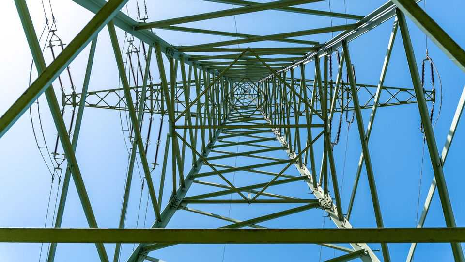
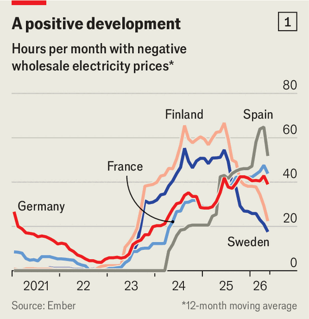
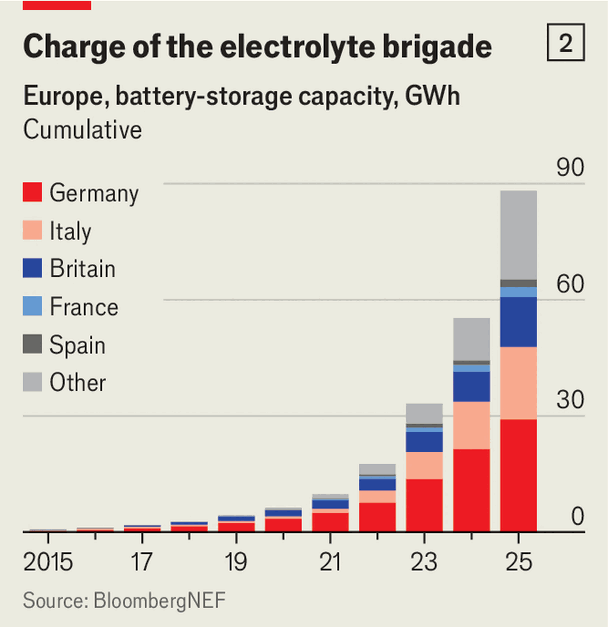

European electricity markets have too much power
They must learn to deal with it
June 4th 2026

WHEN EUROPEAN regulators were tweaking the continent’s wholesale electricity markets some years ago, they added a price floor to short-circuit trading snafus. At minus €500 ($580) per megawatt-hour (MWh), it was more of a price basement. It was set so low in order to be triggered only in exceptional circumstances. May 1st, when bright sunshine and strong winds met low demand for electricity from Europeans enjoying a public holiday, may have seemed pretty ordinary. Yet the wholesale electricity price in Germany reached minus €499 per MWh. If this translated into retail prices, you would pocket €50 for charging your electric car.

For economists, the number zero is not particularly special. If a price needs to be negative to clear a market, so be it. Solar plants and wind farms produce power at near zero marginal cost when the sun is shining and wind blowing. But because that is not necessarily when people need power, and because it is costly to stop producing, they may need to pay someone to absorb the excess electricity. As more renewables plugged into Europe’s grids in the past few years, the number of hours during which buyers in the wholesale market, such as utilities and heavy industry, were paid to take electricity started rising.
Obviously, negative prices offer a strong incentive for anyone who can store electricity and then sell it for more than nothing when demand returns. In sunny California, where batteries are replacing fossil energy to cover the evening demand peaks after charging during the day, the number of hours with negative prices started to decline last year. Across much of Europe, May Day notwithstanding, it is beginning to plateau (see chart 1). The market, at last, is adapting.
Europe’s installed battery capacity rose by 33,000MWh in 2025, to 90,000MWh or so (see chart 2). This is enough to store as much energy as all of Europe, including Britain, generates on average every quarter of an hour. BloombergNEF, a research firm, forecasts that capacity will rise by another 55,000MWh this year, enough to absorb roughly another ten minutes’ worth.

End electricity use is also being successfully shifted into the cheaper hours of the day. Dynamic tariffs, which better reflect prices on wholesale markets, are becoming more popular, especially with owners of heat pumps and electric vehicles. Since January 2025 German providers have been required to offer customers at least one dynamic tariff. One Danish study found that though regular households mostly do not adjust demand to varying prices, those that use lots of electricity do. Another study that looked at German data from 2015-19, when those exposed to variable prices were mostly heavy users such as industry, found that price changes of about €25 per MWh led to shifts in demand of about 4%. A recent analysis by McKinsey, a consultancy, reckons that commercial and industrial consumers in Europe could save €8bn a year by 2030 if they made use of varying prices.
Electrons can move across space as well as across time. That requires strong grids. Europe is belatedly getting serious about expanding these. A new cable installed last year between Sweden and Finland is one factor explaining why hours of negative prices are, California-like, already declining in both countries. The Bay of Biscay interconnector between France and Spain is under construction and due to be completed by 2028. In 2025 Germany approved plans for 2,000km of new power lines, an increase of 45% from the year before.
So far in 2026 only 40 hours have been priced below minus €50 per MWh in Germany, to the relief of grid operators (who are on the hook there). Spain has had none. As the market continues to adjust, wholesale prices near zero will become more common. And with more variable tariffs, people’s electricity bills will reflect this. As they face rising inflation—which reached an annual 3.2% in the euro zone in May, owing to high oil prices—Europeans can draw comfort from that sunny prospect.■
For more expert analysis of the biggest stories in economics, finance and markets, sign up to Money Talks, our weekly subscriber-only newsletter.